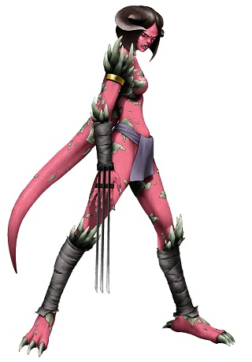
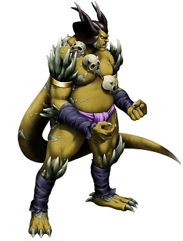

Les Orcons
Originaires du continent d'Aldrow, ils vivent dans la ville d'Orcoth, sous forme de tribu avec un chef à leur tête : celui qui est le plus fort. À présent, quelques humains et le groupe des Chasseurs sont tolérés pour vivre et circuler à Orcoth, même s'il y a quelques rares tensions liées à la cessation de la guerre assez récente.

Durant le grand conflit
Lors de la guerre entre les deimos et les humains, ils pensaient à agrandir leur territoire car les orcons sont expansionnistes. Comme à l'accoutumée entre les deimos et les humains, ils avaient souvent des échauffourées avec ces dernier aux niveau des mines de pierres des esprits pour chacun en prendre le contrôle, ainsi qu'au niveau des frontières.
Des humanoïdes robustes et têtus
Les orcons peuvent avoir la peau bleue, jaune, verte ou rose et possèdent également une ou plusieurs cornes sur la tête. Il ont une queue qui fait en moyenne les deux-tiers de la taille de l'orcon qui part d'un peu en-dessous des omoplates dans leur dos qu'il peuvent contrôler. Leurs griffes acérées les rendent dangereux et pour pouvoir utiliser une arme humaine, elle doit souvent être modifiée pour correspondre. Ils mesurent en moyenne entre 1,50 et 1,90 mètre à l'âge adulte pour environ 60 à 100 kg. Néanmoins, ils peuvent avoir mauvais caractère et être têtus.
Noms orcons
Les deimos ne possèdent pas de nom de famille, cela ne fait pas partie de leur culture. (les noms orcs marchent plutôt bien)
Noms masculins : Densimo, Zoram, Zugalo, Gorma, (tous présents dans le jeu).
Noms féminins : Delma (présent en jeu), Ulusha, Shun, Lazar, Duraz, Maza.
Traits
Augmentation de caractéristiques. Votre Dextérité ou votre Force augmente de 2 et votre Constitution de 1.
Âge. Un orcon atteint l'âge adulte à 18 ans et a une longévité de 120 ans environ mais rare sont ceux à l'atteindre au vu de le nature de guerrier.
Alignement. Les orcons voyagent assez peu, ils sont très attachés à leur ville natale et à l'extension de leur territoire ce qui fait qu'ils sont généralement loyal. Il est rare de trouver des orcons qui tendent vers les alignements bon ou mauvais, généralement ils font un peu ce qu'ils ont envie sur un coup de tête.
Taille. Les orcons mesurent en moyenne entre 1,50 et 1,90 mètre de haut, pour un poids variant entre 60 et 100 kg. Votre taille est Moyenne.
Vitesse. Votre vitesse de base est 9 mètres.
Griffes. Vous maîtrisez vos armes naturelles, lesquelles infligent 1d4 de dégâts tranchants.
Orcon pure souche. Vous maîtrisez les compétences Athlétisme et Intimidation.
Langues. Vous pouvez parler, lire et écrire le commun et l'orcon.
Capacités magiques
| Niveau personnage | Niveau des sorts | Sorts | - Emplacements de sorts - | |||||||
| 1 | 2 | 3 | 4 | 5 | 6 | 7 | 8 | |||
| 1 | 1 | Flèche enflammée | 1 | |||||||
| 3 | 2 | Célérité, Vent destructeur | 2 | 1 | ||||||
| 5 | 3 | Force mentale, Détournement | 2 | 1 | 1 | |||||
| 7 | 4 | Orage de feu | 3 | 2 | 1 | 1 | ||||
| 9 | 5 | Oiseau de feu, Pluie de pierres | 3 | 2 | 2 | 1 | 1 | |||
| 11 | 6 | Tornade | 3 | 3 | 2 | 2 | 1 | 1 | ||
| 13 | 7 | Bouclier magique, Champ défensif | 4 | 3 | 3 | 2 | 2 | 1 | 1 | |
| 15 | 8 | Explosion | 4 | 3 | 3 | 3 | 2 | 1 | 1 | 1 |

Liés au feu. Les orcons sont capables d'utiliser des emplacements de sorts supérieurs à celui du niveau du sort pour augmenter l'efficacité de ses sorts de feu (+1 dé de dégâts / niveau d'emplacement de sort) ce qui augmente le coût en pierres des esprits de 2/niveau de sort supplémentaire.
Par exemple le sort flèche enflammé est un sort de niveau 1 qui tape à 4d6 et coûte 10 pierres des esprits. S'il est utilisé avec un emplacement de sort de niveau 2 il fera 5d6 pour un coût de 12 pierres des esprits.
Connexion à la magie. Ils sont également capable d'utiliser des emplacements de sorts supérieurs à celui du niveau du sort pour augmenter l'efficacité de sorts des autres éléments connus mais pour un prix de 3 pierres des esprit par niveau d'emplacement de sort supplémentaire.